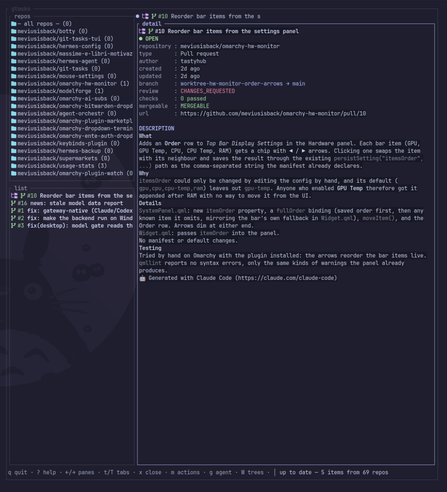

The triage desk for GitHub maintainers
One screen follows every repo you care about, shows each pull request with checks and review state, and hands the picked one to your coding agent in a fresh worktree.
69 test suites green · security audited · written in Rust

Live view: repos, the working set, and PR detail with checks, review state, and full description.
Why maintainers keep it open all day
See the whole queue at once
Repos, list, and full detail with state pill, meta table, and description. No hopping between CLI and browser.
Read the change before you delegate
Full diff overlay on d, first 200 lines in red and green, cached per item so it opens instantly.
Hand off to your agent in one key
g starts Hermes, Pi, Opencode, Agy, or Codex in the embedded box, on a fresh worktree with the branch ready. Sandboxed mode included.
Safe where it matters
No shell anywhere, tokens never reach the agent, atomic writes with symlink checks. Audited end to end.
Every repo you follow. Every thread that needs you. One screen. Zero inbox.
From zero to first handoff in three steps
Follow repos
Press R, pick repos. The list fills from GraphQL and stays fresh from disk cache.
Read and decide
Move through the list while bodies preload. d shows the diff, m offers review actions.
Delegate
g starts your agent in its own worktree. W manages trees without the agent flow.
Questions, answered
What do I need to run it?
The gh CLI logged in, plus any of the five supported agents. Linux terminal, Nerd Font optional.
Which agents work?
Hermes, Pi, Opencode, Agy, and Codex, each streaming into the embedded agent box.
Is it safe with hostile PRs?
Titles, bodies, and diffs are sanitised before render, and the agent child never sees your tokens.
What does it cost?
Free and open source under MIT. Star the repo if it earns its place in your day.